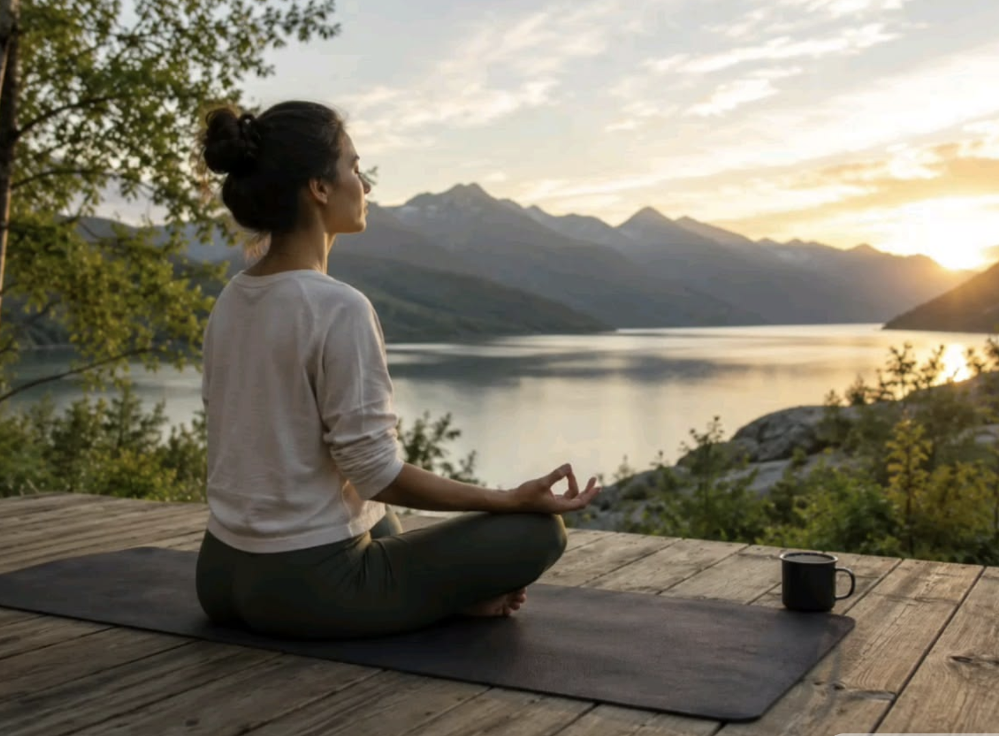
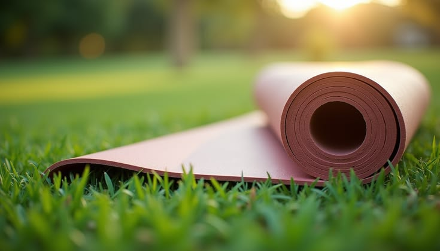
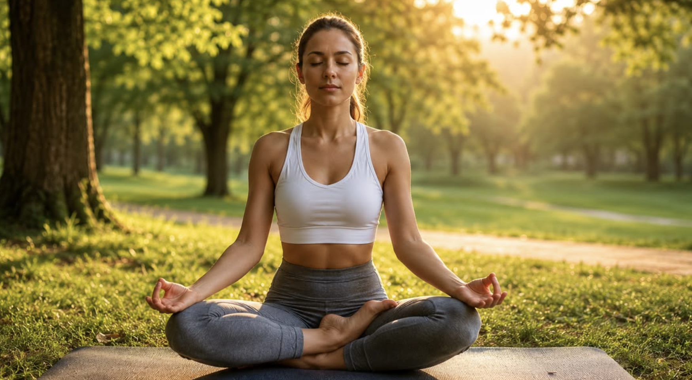
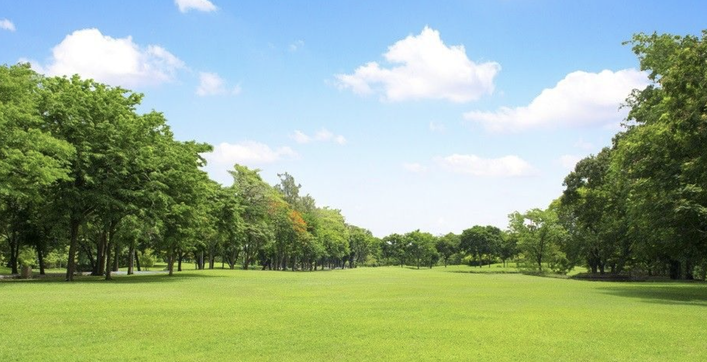

Enkle guides for begyndere
Vælg et sted i naturen, hvor du føler dig tryg og har plads til at bevæge dig.
Find dit stedBegynderguide
Du behøver ikke være erfaren for at komme i gang. Start enkelt, find et roligt sted i naturen, og følg guiden trin for trin.
Start din første øvelse
Vælg et sted i naturen, hvor du føler dig tryg og har plads til at bevæge dig.
Find dit sted
Du behøver ikke meget for at starte. En yogamåtte og lidt vand er et godt udgangspunkt.
Se udstyr
Begynd med en rolig og enkel øvelse, som er nem at følge, når du prøver yoga for første gang.
Prøv øvelsen
Der er ingen grund til at skynde sig. Lyt til kroppen og giv dig selv tid til at finde ro.
Gode råd